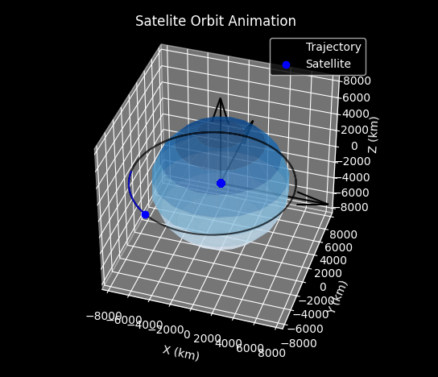

Orbital Dynamics Simulator
Nov - Dec 2024
Interactive 3D visualization tool for satellite orbits around Earth. Users can input orbital parameters to analyze how eccentricity and inclination affect satellite motion using real orbital mechanics principles.
Key Features:
- Customizable orbital parameters (altitude, inclination, eccentricity)
- Real-time 3D animation with dynamic scaling
- Kepler's laws and Newtonian gravity implementation
- Interactive Earth visualization with trajectory tracking
Technical Implementation:
- Scipy's lsoda solver for differential equations
- Matplotlib 3D plotting with animation framework
- Dynamic axis scaling and smooth trajectory rendering
Python
NumPy
Matplotlib
SciPy
Orbital Mechanics